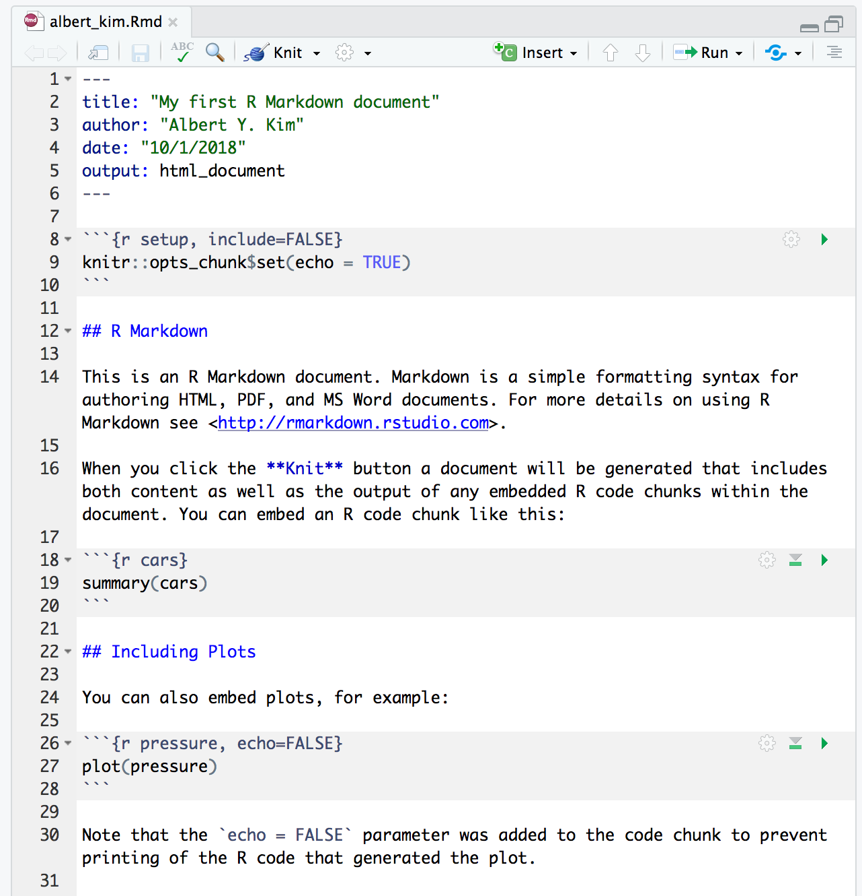
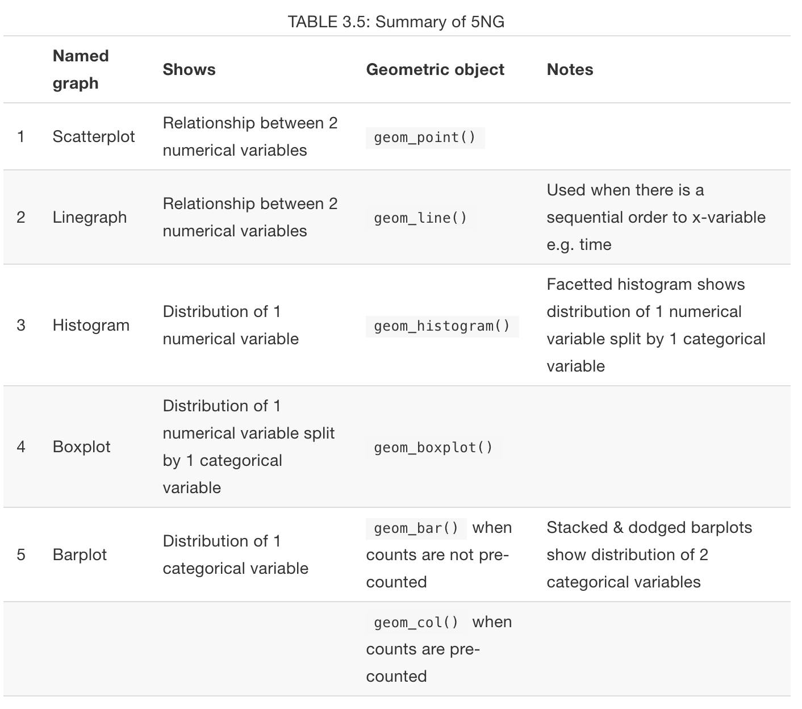
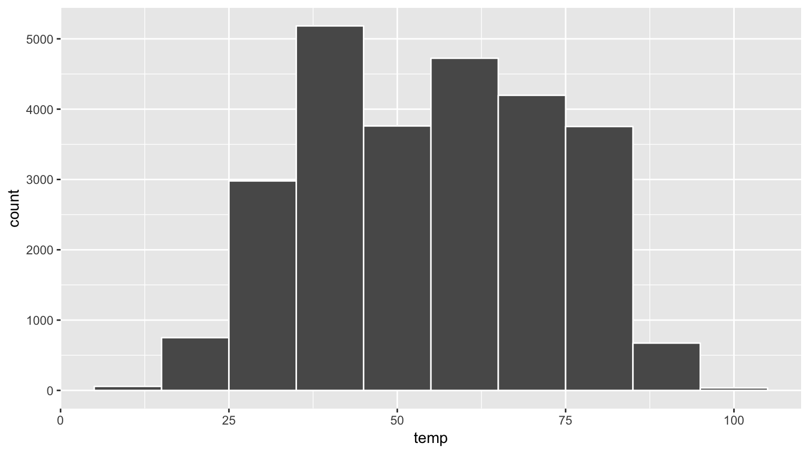

SDS 192: Introduction to Data Science
Albert Y. Kim
Last updated on 2018-10-18
Schedule
- Topics:
- Tools of the trade (orange): R, RStudio, R packages, R Markdown, Git & GitHub.
- Data visualization (pink): Grammar of Graphics, Five Named Graphs (5NG), color theory.
- Working with data (blue): Tidy data, data wrangling, data importing.
- Maps and spatial data (green): Map and geospatial data.
- Learning how to learn new data science tools (yellow): Text data, webscraping, SQL.
- Readings + Reference: MD is ModernDive, MDSR is Modern Data Science with R, TMR is Text Mining with R.
Lec 18: Fri 10/18
Announcements
Follow what’s going on at the 2018 Women in Statistics and Data Science Conference on Twitter at:
Today’s Topics/Activities
1. Chalk Talk
- Joining AKA merging two separate data frames into one by matching them along a “key” variable
- Many types of joins:
left_join(),right_join(),inner_join(),full_join(),anti_join()
2. In-class exercise
Read ModernDive 5.8 and do learning checks. Pay close attention to Figure 5.7 (shown below) illustrating how you would join all the data frames in the nycflights13 package. In particular, run the following in the console to view all the data frames and convince yourselves that the arrows indeed indicate “key” variables.
library(nycflights13)
library(dplyr)
View(flights)
View(airports)
View(planes)
View(weather)
View(airlines)
3. Tweet of the day
All the _join() functions can be thought of as Venn diagrams. Click on image to see all 6:
I created a cheat sheet of #dplyr's join functions, inspired by this: http://t.co/40wMQDP0J4 #rstats pic.twitter.com/P4XOLs5ov3
— Hiroaki Yutani (@yutannihilation) January 4, 2015
Lec 17: Wed 10/17
Announcements
- Guest lecturer on Friday: Prof. Randi Garcia, who is jointly appointed between SDS and psychology.
- Link to Mini-project 1 feedback appointment sign-up form posted on projects page here.
Today’s Topics/Activities
1. Chalk Talk
- What are RStudio projects?
- Create new variables using
mutate(). - Reorder rows in ascesding order using
arrange()or descending order usingarrange(desc()). - What is pseudocode?
2. In-class exercise
- Read ModernDive 5.6 + 5.7 and do learning checks
3. Tweet of the day
Want to see data science as it really happens? “Introduction to the Tidyverse” DataCamp instructor David Robinson recently recorded a screencast analyzing the 538 college majors dataset. In particular, note how messy the process can be:
OVER TWELVE MINUTES WITHOUT SAVING Untitled1, it was harrowing
— Jenny Bryan (@JennyBryan) October 17, 2018
Lec 16: Mon 10/15
Announcements
- Sit next to your Mini-Project 2 group partner
- PS06: DataCamp portion posted; R Markdown component to be posted by tomorrow.
Today’s Topics/Activities
1. Chalk Talk
- What are RStudio projects?
- What is R Markdown?
Input: An .Rmd file |
Output: An .html webpage |
|---|---|
|  |
2. In-class exercise: R Markdown
- At a couple of steps in this process, you will be asked to install packages. Say yes to all of them!
- Fiddle with RStudio settings:
- Go to RStudio menu bar -> Tools -> Global Options… -> R Markdown
- Uncheck box next to “Show output inline for all R Markdown Documents”
- Create new R Markdown
.Rmdfile:- Go to RStudio menu bar -> File -> New File -> R Markdown
- Set “Title” to “My first R Markdown report” and “Author” as your name.
- “Knit” a report:
- Click on the disk icon and save this file as
firstname_lastnamesomewhere on your computer. This will create a file calledfirstname_lastname.Rmd - Click the arrow next to “Knit” -> “Knit to HTML”.
- An HTML webpage should pop up. However, it may be blocked by your browser. If so, in your browser’s URL bar on the right, click on “Always allow pop-ups”.
- Click on the disk icon and save this file as
- Publish this report on web:
- Click on blue “Publish” button on top right of the resulting pop-up html.
- Select RPubs.
- If you haven’t previously, create an account on Rpubs.com. If you have previously, login.
- Set “Title” to “My first R Markdown report” and “Slug” to “testing”
- You should end up with a webpage that looks like this one. This is live on the web!
- Update your report on web:
- Make some trivial change to your
testing.Rmdfile. - “Re-knit” your report and make sure your trivial change is reflected.
- The blue “Publish” button should now read “Republish”
- Click “Update existing”
- Your updates are now live on the web!
- Make some trivial change to your
Tips on R Markdown:
- Knit early, knit often! If you wait until only after you’ve added a ton of code to knit and something doesn’t work, you’ll have a hard time figuring out where the error is. If you make incremental changes and knit after every step, you’ll better able to isolate where errors are.
- If you get stuck, go through these 6 R Markdown Fixes first, then seek assistance. These 6 fixes resolve 85% of issues in my experience.
- For different text formatting tools available to you in R Markdown, go to:
- RStudio menu bar -> Help -> Markdown quick reference
- RStudio menu bar -> Help -> Cheatsheets -> R Markdown Cheat Sheet
3. In-class exercise: Mini-Project 2 R Markdown
Get started on mini-project 2 based on the What to do instructions.
Lec 15: Fri 10/12
Announcements
- Go to Slack
#general_announcmentsand download thedata.zipfile and “unzip” it. - Please only access ModernDive using the link on the top left of the course webpage. Because of webpage problems in the last few weeks, I’ve had to change the website ModernDive is hosted on a few times. So if you’ve bookmarked the old website, your information may be out of date.
- Guest lecturer on Friday 10/19 (next week): Prof. Randi Garcia. I will be away at the 2018 Women in Statistics and Data Science Conference along with Prof. Miles Ott and a group of Smithies who will be presenting.
- Reminder tonight is:

Today’s Topics/Activities
1. Chalk Talk
- What is metadata?
group_by()adds “grouping” meta-data.group_by() %>% summarize()returns group-by-group summary statistics.

2. In-class exercise
- Read ModernDive 5.5
- Mini-Project 2 discussion starting at 11:55
Lec 14: Wed 10/10
Announcements
- A friendly reminder that unless you give me a prior heads up, I ask that you stay the full lecture as it is disruptive to others.
Today’s Topics/Activities
1. In-class exercise
In groups, make this data “tidy”!
2. Chalk Talk
- Summary statistics
summarize()data

3. In-class exercise
- Read ModernDive 5.4
4. Tweet of the day
Hey stats+data science educators! Do your students üò± when seeing üò° errors, üò° warnings, üò° messages in #rstats? In the next update of https://t.co/LmQoQNNe9r in early 2019, they can get üòå by reading @ModernDive 2.2.3, just contributed by @andrewheiss! pic.twitter.com/67YzZf7yXU
— ModernDive (@ModernDive) October 9, 2018
Lec 13: Fri 10/5
Announcements
- Two
#pollstoday:- Webpage redesign?
- Look at tweet of the day below and vote, do you like the building?
- Projects:
- Mini-Project 1 due today at 5pm!
- Next mini-Project 2 is on data wrangling; details next week.
- Added more class time for projects into schedule above: Wed 10/31, Wed 11/28, and Wed 12/12
- Problem sets:
- Giving personalized feedback to 68 students over approximately 13 problem sets is near impossible given the resources I have. It is your responsibility to do a “self-evaluation” after solutions are posted.
- PS02 (imperfect) grading rubric posted.
- PS03 solutions and (imperfect) gradic rubric posted.
- (Due Wednesday after break) PS04 (imperfect) grading rubric posted.
- Interested in majoring in SDS? Check out our presentation of the major on Tuesday 10/23 from 12:15-1:05pm in Ford Hall.
Today’s Topics/Activities
1. Chalk Talk
- Pipes
%>%, pronounced “THEN”. To quickly type this in RStudio, hold down- macOS: COMMAND + SHIFT + M
- Windows, UNIX, Chromebooke: CTRL + SHIFT + M
- Functions
- Data wrangling verb:
filter()
2
. In-class exercise
Read ModernDive 5.1-5.3.
3. Tweet of the day
Boston University is going to build a new 17-floor ‚ÄúData Sciences Center‚Äù on Commonwealth Avenue, designed to look like a stack of books. üëç or üëé?
Boston University unveils plans for book-inspired data sciences center on Comm. Ave. https://t.co/XpnDGATpnE pic.twitter.com/A8LMpYoB7K
— Boston.com (@BostonDotCom) October 3, 2018
Lec 12: Wed 10/3
Announcements
- Please vote in Starbucks vs Dunkin Donuts poll in Slack
#polls. - ModernDive learning check solutions for Chapter 4 + 5 now posted in Appendix D.
- PS04 is not due Monday, but Wednesday after the break.
- Discussion on PS03 on Friday.
- Project update
Today’s Topics/Activities
1. Discussion on color “chartjunk”
What constitutes “chartjunk”? Look at the following faceted scatterplot of “Median household income” and “Number of coffee shops per 1000 people” where we facet by two types of coffee shops: Dunkin Donuts and Starbucks.
Ask yourself: “In what ways could the color be considered chartjunk?” and “In what ways could the color be useful?”
The moral of the story:
What constitutes “chartjunk” is subjective. You need to make a choice/decision given your audience and own that decision.
Note there is also a blue regression “trend line” that tries to summarize the overall relationship between the points and tell us whether:
- The relationship is positive: as the median income of census tracts goes up, the number of shops in a census tract tends to go up as well. This is the case for Starbucks. The story the right facet is telling: This graphical analysis is suggesting Starbucks tend to locate in higher income areas.
- The relationship is negative: as the median income of census tracts goes up, the number of shops in a census tract tends to go down. This is the case Dunkin Donuts. The story the left facet is telling: This graphical analysis is suggesting Dunkin Donuts tend to locate in lower income areas.
2. In-class exercise
Time to work on projects!
Lec 11: Mon 10/1
Announcements
- Notes on Slack:
- Updated project info in
#general_announcements - Before you ask a question on
#randomor#r_questions, see if maybe it’s already been answered! - Vote on
#pollson spreadsheets
- Updated project info in
- Office hours this week. Please Slack me if this disrupts your plans.
- Monday 10/1:
3-6pm2:30-4:30pm - Tuesday 10/2:
3-6pm2-4:30pm
- Monday 10/1:
- Problem set 04 to be posted tomorrow morning
- Wednesday’s lecture: Class time for projects
Today’s Topics/Activities

1. Chalk Talk
- “Tidy” data format. Note “Tidy” here has a specific data science meaning which we are using, and not tidy in the colloquial sense of the word (organized, neat, …):

- See Wikipedia:
- “Tidy” = Narrow AKA stacked AKA tall
- Rectangular data that is not “tidy” = Wide AKA unstacked
- Why do we care about “tidy” data format?
- Short answer: Because all the functions in the
ggplot2anddplyrR packages for data visualization and data wrangling are designed so that all inputs and outputs are in “tidy” format; this is for consistency. - Longer answer (only if you’re curious): Because the
ggplot2anddplyrpackages are part of thetidyverse: an opinionated collection of R packages designed for data science. See tidy tools manifesto for more details (in particular the “Design for humans” section).
- Short answer: Because all the functions in the
2. In-class exercise
Read ModernDive from the beginning of Chapter 4 to the end of Chapter 4.3 on “tidy” data format and spreadsheets. Note: we’ll come back to Chapter 4.4 on converting “wide” format data to “tidy” data format using the tidyr package later in the course.
3. Tweet of the day
Preview of November topics: We’ll be using “Text Mining in R: A Tidy Approach” for analyzing text data. Note the word “tidy” in the title:
NEW POST: The Life-Changing Magic of Tidying Text https://t.co/CUQJZNHsAl #rstats pic.twitter.com/paD965OMoG
— Julia Silge (@juliasilge) April 29, 2016
Lec 10
Announcements
In preparation for today’s lecture, copy/paste all the following code to your scratchpad.R on color theory. I’ll be covering these examples one-by-one during the chalk talk today.
# Lec 10 Code:
# Mapping the color aesthetic of scatterplots/barplots to a categorical variable
# Load packages:
library(dplyr)
library(ggplot2)
# 1. Manually create a toy data frame ----
toy_data <- data_frame(
x = c(1, 2, 3, 4, 5),
y = c(5, 4, 3, 2, 1),
count = c(10, 20, 30, 40, 50),
group = c("A", "B", "C", "D", "E")
)
toy_data
# 2. Scatterplots: mapping group to color aesthetic ----
# 2.a) Simple scatterplot with size set to 5 for all points (i.e. not mapping
# to a variable in toy_data)
ggplot(toy_data, aes(x = x, y = y)) +
geom_point(size = 5)
# 2.b) Default color scheme: map group variable to color
ggplot(toy_data, aes(x = x, y = y, color = group)) +
geom_point(size = 5)
# 2.c) Change color palette from default to "Set2": No assumed ordering to group
ggplot(toy_data, aes(x = x, y = y, color = group)) +
geom_point(size = 5) +
scale_color_brewer(palette = "Set2")
# 2.d) Change color palette from default to "Blues": Assumed ordering to group
ggplot(toy_data, aes(x = x, y = y, color = group)) +
geom_point(size = 5) +
scale_color_brewer(palette = "Blues")
# 3. Barplots: mapping group to fill aesthetic ----
# 3.a) Simple barplot
ggplot(toy_data, aes(x = group, y = count)) +
geom_col()
# 3.b) color aesthetic is the outline of bars
ggplot(toy_data, aes(x = group, y = count, color = group)) +
geom_col()
# 3.c) The color of bars corresponds to fill aesthetic
ggplot(toy_data, aes(x = group, y = count, fill = group)) +
geom_col()
# 3.d) Change color palette from default to "Set2": No assumed ordering to group
ggplot(toy_data, aes(x = group, y = count, fill = group)) +
geom_col() +
scale_fill_brewer(palette = "Set1")
# 3.e) Change color palette from default to "YlOrBr": Assumed ordering to group
ggplot(toy_data, aes(x = group, y = count, fill = group)) +
geom_col() +
scale_fill_brewer(palette = "YlOrBr")Today’s Topics/Activities
1. Chalk Talk
Topic 1: Default ggplot color “palette” for categorical variables (we’ll cover color “gradients” for numerical variables later). Notice location of 5 dots on color wheel.

Topic 2: Changing default color “palette” for categorical variables based on Prof. Cynthia A. Brewer’s research on cartography. Click on this link: Color Brewer 2.0. Note the areas highlighted in red below, in particular the BuGn color palette code.

2. In-class exercise
- Class time to work on mini-project 1
- Start memorizing Table 3.5 in ModernDive 3.9: Summary of when to use which of the “Five Named Graphs (5NG)”

3. Tweet of the day
Advice from @hadleywickham, creator of the ggplot2 and dplyr R packages:
This is the best advice from @hadleywickham. True of learning R. True of learning anything. #rstats https://t.co/Qh8SuRuBUk pic.twitter.com/sOeoQQOYye
— Aaron Williams (@awunderground) August 25, 2018
Lec 9
Announcements
- A reminder that the Data Assistants in our lectures (Jordan and Paige) are also the Sunday thru Thursday 7-9pm McConnell Hall 301 tutors.
- Added to “Event” column in calendar above: Class time to work on mini-project 1:
- Friday 9/28
- Wednesday 10/3
- Solutions to PS02 posted. Please download the
PS02_solutions.Rfile to your computer and open them in RStudio for a brief in-class discussion.- RStudio Desktop users: To guarantee the
PS02_solutions.Rfile opens in the RStudio app (AKA a car’s dashboard) and not the regular R app (AKA a car’s engine), don’t double-click thePS02_solutions.Rfile directly, but rather go to Files panel of RStudio and find/click/open the file from there. - RStudio Server users: Download
PS02_solutions.Rto your computer, then upload it to RStudio by clicking “upload” like in this image:
- RStudio Desktop users: To guarantee the
Today’s Topics/Activities
1. Mini-Discussion on pie charts
Say the following piecharts represent results of an election poll at time points A = September, B = October, then C = November. At each time point we present the proportion of the poll respondents who say they will support one of 5 candidates: 1 through 5. Based on these 3 piecharts, answer the following questions:
- At time point A, is candidate 5 doing better than candidate 4?
- Did candidate 3 do better at time point B or time point C?
- Who gained more support between time point A and time point B, candidate 2 or candidate 4?

Compare that to using barplots. Which do you prefer?

2. Chalk Talk
The trickiest of the Five Named Graphs: Barplots. In particular, whether you use geom_bar() or geom_col() to create a barplot depends on whether the sums are pre-computed.
3. In-class exercise
Read ModernDive 3.8 on barplots
4. Tweet of the day
Click here for definition of “Winging it”.
Advice for aspiring data scientists: learn SQL, communication is a technical skill, start a blog, teach others, don't worry about learning everything, find your community, stay curious, have fun, don't be afraid to use Google, and remember that everyone is winging it.
‚Äî Caitlin Hudonüë©üèº üíª (@beeonaposy) September 25, 2018
Lec 8
Announcements
- Lecture on today will end at 11:55am to give people time to comfortably get to Emily Dodwell’s talk listed in Lec06.
- Visitor: Data Counselor Raul Zelada Aprili
- Go over question in
#random: Most simple, most important, and yet most neglected step in a data analysis, even on my team at Google: just looking at your data - Finishing details of Mini-project 1 in Projects tab
- Problem sets:
- PS02 due tonite at 9pm
- PS03 posted by tonight at 9pm
Today’s Topics/Activities
1. Chalk Talk
(Slightly longer than usual chalk talk): Doing by hand what geom_boxplot() automates: drawing a boxplot: say we want to plot a boxplot of the following 12 values which are pre-sorted:
1, 3, 5, 6, 7, 8, 9, 12, 13, 14, 15, 30
They have the following summary statistics. A summary statistic is a single numerical value summarizing many values. Examples include the immediately obvious mean AKA average and median. Other less immediately obvious examples include:
- Quartiles (1st, 2nd, and 3rd) that cut up the data into 4 parts, each containing roughly one quarter = 25% of the data
- Minimum & maximum
- Interquartile-range (IQR): the distance between the 3rd and 1st quartiles
| Min. | 1st Quartile | Median = 2nd Quartile | 3rd Quartile | Max. | IQR |
|---|---|---|---|---|---|
| 1 | 5.5 | 8.5 | 13.5 | 30 | 8 = 13.5 - 5.5 |
Let’s compare the points and the corresponding boxplot side-by-side with the values on the \(y\)-axis matching:

2. In-class exercise
Read ModernDive 3.7 on Boxplots
Lec 7
Announcements
- Go over questions in
#randomSlack channel - ModernDive Learning Check solutions are
directly under question statementnow all in Appendix D at the back of the book. - Lecture on Monday will end at 11:55am to give people time to comfortably get to Emily Dodwell’s talk listed in Lec06.
- Mini-project 1: Look at “Projects” tab
- Videoconferencing: In Slack, in a Direct Message, type
/appear SOME_UNIQUE_NAME_ONLY_YOU_WOULD_THINK_OF
Today’s Topics/Activities
1. Discussion on Histogram Binning
Comparing Figures 3.10 and 3.11 in the ModernDive readings on histograms:
library(ggplot2)
library(nycflights13)
# Code to generate Fig 3.10 with bar border color white
ggplot(data = weather, mapping = aes(x = temp)) +
geom_histogram(color = "white")
# Code to generate Fig 3.11
ggplot(data = weather, mapping = aes(x = temp)) +
geom_histogram(bins = 60, color = "white")Why the weird up and down spikes in the right-hand histogram? Here is a random sample of 99 temperatures of the 464 temperature recordings between 50 and 51 degrees
## [1] 50.00 50.00 50.00 50.00 50.00 50.00 50.00 50.00 50.00 50.00 50.54
## [12] 50.00 50.00 50.00 50.00 50.90 50.00 50.00 50.00 50.00 50.00 50.00
## [23] 50.00 50.00 50.00 50.00 50.00 50.00 50.00 50.00 50.00 50.72 50.00
## [34] 50.00 50.00 50.00 50.00 50.00 50.00 50.00 50.00 50.00 50.00 50.00
## [45] 50.00 50.00 50.00 50.00 50.00 50.00 50.00 50.00 50.00 50.00 50.00
## [56] 50.00 50.00 50.00 50.00 50.00 50.00 50.00 50.00 50.00 50.00 50.00
## [67] 50.00 50.90 50.00 50.00 50.00 50.00 50.00 50.00 50.00 50.00 50.00
## [78] 50.00 50.00 50.00 50.00 50.00 50.00 50.00 50.00 50.00 50.00 50.00
## [89] 50.00 50.00 50.00 50.00 50.00 50.00 50.00 50.00 50.00 50.00 50.00Here is a random sample of 99 temperatures of the 763 temperature recordings between 55 and 56 degrees:
## [1] 55.94 55.04 55.94 55.94 55.04 55.04 55.40 55.94 55.94 55.04 55.94
## [12] 55.04 55.94 55.04 55.94 55.94 55.94 55.94 55.94 55.04 55.04 55.58
## [23] 55.94 55.94 55.94 55.94 55.94 55.94 55.94 55.94 55.04 55.04 55.94
## [34] 55.04 55.40 55.04 55.94 55.94 55.94 55.40 55.04 55.40 55.04 55.94
## [45] 55.04 55.40 55.94 55.94 55.04 55.94 55.94 55.94 55.94 55.94 55.04
## [56] 55.94 55.40 55.04 55.94 55.94 55.94 55.94 55.94 55.04 55.04 55.04
## [67] 55.04 55.94 55.94 55.94 55.04 55.94 55.94 55.94 55.94 55.94 55.94
## [78] 55.94 55.04 55.94 55.94 55.94 55.04 55.94 55.94 55.04 55.94 55.94
## [89] 55.04 55.94 55.94 55.04 55.40 55.04 55.94 55.04 55.94 55.94 55.04What is the pattern?
2. Chalk Talk
Facets and Facetted Histograms. Say you’re asking yourself “What kind of jacket (if any) should I bring to my trip to New York?” Which plot is more useful? Fig 3.13 from ModernDive of all 26115 temperature recordings at all three airports in New York City

to Fig 3.14 of the temperature recordings split by month.
3. In-class exercise
Read ModernDive 3.6 on Facets
4. Tweet of the day
ModernDive co-author Chester Ismay @old_man_chester is Senior Curriculum Lead at DataCamp. If you are curious for a “big picture” view of why we are using DataCamp, read the linked blogpost, in particular look at the image of the “data science pipeline”. Remember, you have free access to all DataCamp courses for 6 months!
Read this blog post by @old_man_chester to learn about our new Tidyverse Fundamentals with R Skill Track! In this track, you’ll learn the skills needed to get you up and running with data science in R using the #tidyverse. https://t.co/4fqAdJgoTX pic.twitter.com/RsYxe4Hpm5
— DataCamp (@DataCamp) September 20, 2018
Lec 6
Announcements
- Curious about a career in data science? Then come for Emily Dodwell (class of 2011)‚Äôs talk ‚ÄúThe Nuts and Bolts of a Data Science Career‚Äù on Monday 9/24; stay for the üçïlunch! Click here for details.
- Added hints to Problem set 2 R component below.
- In above schedule and in syllabus project due dates are posted. Details on mini-project 1 on data visualization will be given this Friday.
- RStudio Server update: Computing and Technical Services has added 4 additional processors to RStudio Server so things should run smoother!
- Learning check solutions by Friday, promise!
- Slack poll on
scratchpad.R
Today’s Topics/Activities
1. Chalk Talk
Histograms visualize the distribution of a numerical variable.
2. In-class exercise
- Read the following requests from Suzanne Palmer in Computing and Technical Services about using RStudio Server
- “Please do not have students install packages.” Recall: If you are using RStudio Server, there is no need to install packages, only to load/open them using the
library()command. For examplelibrary(nycflights13). - “Please ask students to limit their number of concurrent sessions.” In other words, when you are done working in RStudio Server, please close your browser window so that it frees up shared computing resources for other people.
- If you would like to do your own work that involves “big data”, for example for a thesis project, please Slack me and we’ll set up a separate account.
- “Please do not have students install packages.” Recall: If you are using RStudio Server, there is no need to install packages, only to load/open them using the
- Read former Smith College professor Dr. Amelia McNamara’s visual essay on histograms.
- Then, as marked in the Schedule at the top of this page, read ModernDive 3.5
3. Tweet of the day
On imposter syndrome is a psychological pattern in which an individual doubts their accomplishments and has a persistent internalized fear of being exposed as a “fraud”. Click below to read full thread.
Let's talk about imposter syndrome in tech ‚Äì specifically, ways we can combat it better, both individually and as a community (a thread) üëá
‚Äî Caitlin Hudonüë©üèº üíª (@beeonaposy) September 18, 2018
Lec 5
Announcements
- What my
scratchpad.Rlooks like after Lec4. Yours shouldn’t be exactly the same, but close.
Note because I saved my work,scratchpad.Ris written in black. If I had unsaved work, this would be written in red.
- Problem set 02 posted below.
Today’s Topics/Activities
1. Chalk Talk
- What is overplotting?
- When do I use linegraphs instead of scatterplots?
2. In-class exercise: Comment lines
In the screen shot of my scratchpad.R above, any line that starts with a # are called comment lines. They are ignored by R when you run them in the console. Run both these lines in the console separately:
this is a comment line that R ignores that helps readers (including you!) understand code
# this is a comment line that R ignores that helps readers (including you!) understand codeWhy does one line return an Error whereas the other doesn’t?
3. In-class exercise
As marked in the Schedule at the top of this page, read ModernDive 3.3.2 - 3.4 (start of Chapter 3.3.2 to the end of 3.4).
Lec 4
Announcements
- Extra office hours today 3:30-5pm in McConnell 215
- For those of you with interests in Biology: Reed College’s Prof Derek Applewhite “The Spatial and Temporal Regulation of Non-muscle Myosin II Contractility” talk on Monday afternoon.
- Added note about when to do DataCamp courses to syllabus: You do not need to complete any DataCamp courses in preparation for future lectures; they will always be explicitly assigned.
- Solutions to previous lecture’s learning checks will be posted directly underneith question. Ex: Look at LC2.1 Solutions I just posted.
Today’s Topics/Activities
1. Chalk Talk
The Grammar of Graphics: the theoretical underpinnings of statistical graphics
2. In-class exercise: R code scratchpads
Question: Should I be copying/pasting/tweeking code directly in the console window?
Answer: You can, but it makes saving work difficult. Instead, create a “scratchpad”:
- Create a new
.Rscript: In RStudio Menu Bar -> File -> New File -> R Script. - Save this as
scratchpad.R - Copy/paste/tweak any code in your scratchpad, not in console window. For example, for this exercise write:
1+1 - To “run” code in the console (in other words tell R to “do this”), you can do one of the following:
- Copy it from scratchpad, then paste it in console, then hit enter.
- Highlight the code you want to run, then click on “Run”
- Highlight the code you want to run, then press control+enter on Windows/Unix/Chromebook or ⌘+enter on macOS.
3. In-class exercise
As marked in the Schedule at the top of this page, read ModernDive 3 - 3.3.1 (start of Chapter 3 to the end of 3.3.1).
- Do not ignore the “Needed Packages” section at the beginning. Recall:
- The phone vs app analogy described in ModernDive 2.3.
- If you are using RStudio Server in your browser, these packages come pre-installed.
- If you are using RStudio Desktop installed on your computer, you’ll have to ensure these packages are installed.
- Please skip the “Introduction to the Tidyverse” DataCamp course mentioned at the beginning of Chapter 3 for now.
- “Learning checks”: These are practice problems that you do not need to submit. Should you write your answers down? If you feel like you would benefit, then yes! I will post solutions to the learning checks before the next lecture!
Lec 3
- Go over previous Slack
#general_announcements - If you haven’t already, please complete the Intro Survey from Lec 1.
- Syllabus discussion:
- Added full topic schedule
- Added office hours
- Added expectations to following sections: Basic Course Information, Topic Schedule and Readings, Evaluation, Accommodations, Code of Conduct
Today’s Topics/Activities
- Go over ModernDive Chapter 2. Note:
- You can skip all videos and linked DataCamp courses.
- “Learning checks”: These are practice problems that you do not need to submit. Should you write your answers down? If you feel like you would benefit, then yes! I will post solutions to the learning checks before the next lecture!
- Start Problem set 1 below. I will discuss the DataCamp interface at 11:55am.
Getting help
A big part of learning data science tools is learning how to get help effectively. For example, in this course:
In class:
- Ask yourself “Is this something I can Google?” Learning to use Google effectively is an important tool in a data scientist’s toolbox.
- Ask the people sitting next to you.
- Raise your hand to ask the data assistant or myself.
Outside of class:
- Ask yourself “Is this something I can Google?” Learning to use Google effectively is an important tool in a data scientist’s toolbox.
- Ask yourself “Are there people I work with in class that I can Slack?”
- If you all don’t know, post a question on Slack in the
#r_questionschannel. - Visit the Spinelli Center for tutoring Sunday-Thursday 7-9pm (see syllabus for more info).
Lec 2
- Background Based on n=61 responses so far:

- Slack
- Click the hashtag in the menu bar to open the SDS 192 Slack team (feel free to use the Slack App if you have it installed). If you have an account yet, click here to join.
- Practice sending formated messages to a classmate.
- Getting started with data in R
- Click “R” in the menu bar above to open RStudio Server to use R in your web-browser.
- Click on ModernDive above and read Chapter 2: Getting started with data.
- You don’t need to watch the videos for now
- If you are using RStudio Server, you don’t need to install packages. However, you will need to load them.
- Learning checks: These are practice problems to reinforce your learning. You do not need to submit today’s learning checks.
- DataCamp discussion.
Lec 1
- Data viz
- Comparison of Beck’s original (1933) and today’s London Underground map.
- Map of actual routes London Underground lines follow.
- Data wrangling Do the following…
- Login to RStudio Server. If you can’t, follow along with someone nearby and fill out the help Google Form below.
- In the “Console” window copy and paste
library(nycflights13)and hit enter. Then copy and pasteView(flights)and hit enter.
- Maps and spatial data
- ColorBrewer 2.0: Color Advice for Maps.
- Interactive maps via the leaflet JavaScript library, which we’ll interface with using the
leafletR package.
- Text data
- Who wrote the New York Times anonymous opinion editorial “I Am Part of the Resistance Inside the Trump Administration”? A text analysis approach to answering this question.
TODO’s
- Make sure:
- You can login to RStudio Server (click R icon in menubar above).
- You have created a GitHub account using your Smith email. While I highly encourage you to add a publicly-facing picture and your full name to your profile, this is not required.
- You are part of the class Slack team (click hashtag icon in menubar above) and
- Have added a profile picture
- Can see the
#192_data_science#moderndive_typoes, andrandomchannels - Have turned on email notifications
- You have received an invitation email to DataCamp and are a member of the group. Do not create an account separately on datacamp.com, but rather use the link in the email you received.
- You’ve completed the Intro Survey
- Need help with any of the above?
Fill out this Google FormSlack me!